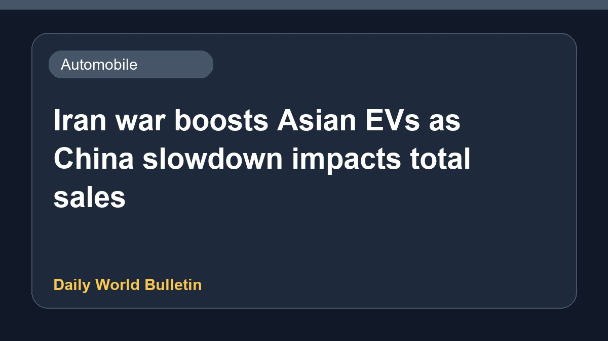

Iran war boosts Asian EVs as China slowdown impacts total sales

Recent conflict involving Iran has spurred electric vehicle growth across Asia. However, a significant slowdown in China continues to weigh heavily on overall automotive sales in the region. According to Nikkei Asia, the contrasting market dynamics highlight how geopolitical tensions are accelerating green mobility adoption in certain areas, even as broader economic headwinds and sluggish demand in the Chinese domestic market create challenges for the wider industry. Further details regarding specific country-wise performance and manufacturer data remain limited at this stage.
Original source: Automobile News Sources
Iran war drives Asia EV boost but China slowdown weighs on overall sales - Nikkei Asia ↗
Iran war drives Asia EV boost but China slowdown weighs on overall sales - Nikkei Asia ↗